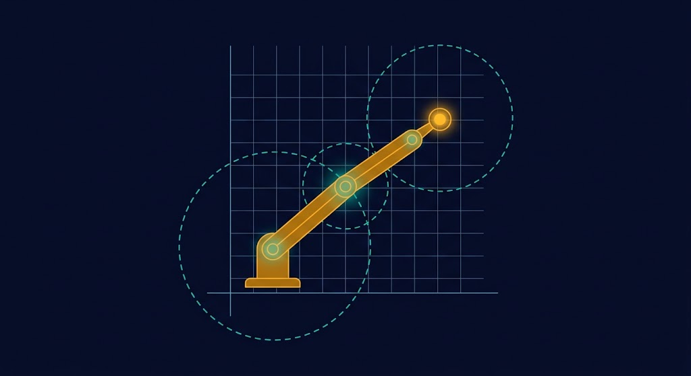

تصویر Hero اینجا قرار میگیردرباتیک: از سینماتیک تا ساخت
سفری گامبهگام از مفاهیم بنیادی رباتیک، سینماتیک مستقیم و معکوس، دینامیک لاگرانژ، کنترل پیشرفته تا ساخت واقعی رباتهای آموزشی — همراه با شبیهسازی در MATLAB، SolidWorks و Arduino
درباره درس
ساختار، رویکرد و مخاطبان دوره
دانشجویان کارشناسی مهندسی مکانیک که پایههای ریاضیات مهندسی، استاتیک و دینامیک را گذراندهاند.
یادگیری پروژهمحور: پیوند ریاضیات سینماتیک و دینامیک با شبیهسازی نرمافزاری و پیادهسازی کارگاهی روی رباتهای آموزشی.
MATLAB / Simulink، Simscape Multibody، SolidWorks، Python، SAM و آردوینو (Arduino Uno/Mega).
ربات دو لینکی سری (2R)، ربات MeArm و سرووموتورهای SG90 / MG996R با برد آردوینو.
نقشه راه ۶ فازی
از مفاهیم پایه تا ساخت و ارزیابی نهایی
مفاهیم پایه و شناخت ساختاری
جلسات ۱ تا ۴
آشنایی با مفاهیم اولیه رباتیک، دستهبندی رباتها، شناخت فیزیکی ربات سری دو لینکی و ربات اسکارا (SCARA).
سینماتیک مستقیم و شبیهسازی
جلسات ۵ و ۶
فرمولبندی سینماتیک مستقیم (روش DH) و یکپارچهسازی شبیهسازی در SolidWorks، MATLAB و Python.
سینماتیک معکوس و دینامیک
جلسات ۷ تا ۹
تحلیل سینماتیک معکوس، مدلسازی دینامیکی در SimMechanics و تنظیم کنترلکنندهها (PID).
ژاکوبین، فضاهای کاری و تکینگی
جلسات ۱۰ تا ۱۲
سینماتیک کامل اسکارا، استخراج ماتریس ژاکوبین، تحلیل فضاهای کاری، استاتیک و حالتهای تکینگی.
دینامیک و کنترل پیشرفته
جلسات ۱۳ تا ۱۵
معادلات دینامیک لاگرانژ و نیوتن-اویلر، برنامهریزی مسیر و روشهای کنترلی پیشرفته چندمتغیره (CTC).
جمعبندی و ارزیابی پروژهها
جلسه ۱۶
تحویل پروژههای ساخت کارگاهی، دفاع از شبیهسازیها، تست سختافزاری و جمعبندی نهایی دوره.
جلسات دوره
برای ورود به هر جلسه کلیک کنید — پادکست هر جلسه را میتوانید همینجا گوش دهید
پروژه عملی (MeArm & 2-Link)
در قالب گروههای ۲ تا ۳ نفره — تحویل هفته شانزدهم
مدلسازی مکانیکی
طراحی بدنه و مفاصل ربات در SolidWorks با ضخامت ۳ میلیمتر
شبیهسازی سینماتیکی
استخراج جدول DH، حل سینماتیک و شبیهسازی SimMechanics در MATLAB
برش لیزری و مونتاژ
برش قطعات، مونتاژ با سرووهای SG90/MG996R و آردوینو
کنترل حرکتی
ارسال زوایای IK از MATLAB به آردوینو جهت تعقیب مسیر
منابع و ابزارها
مراجع علمی و نرمافزارهای مورد نیاز
- Robot Dynamics and Control — Spong, Hutchinson & Vidyasagar
- Introduction to Robotics: Mechanics and Control — John J. Craig
- جزوات و ویدیوهای آموزشی دکتر مسعود گوهریمنش (دانشگاه تربت حیدریه، ARCSLAB)
- MATLAB / Simulink + Simscape Multibody
- Symbolic Math Toolbox & Control System Toolbox
- SolidWorks (مدلسازی سهبعدی)
- Python (NumPy, SciPy, Matplotlib)
- SAM (تحلیل مکانیزمها)
- Arduino Uno / Mega
- سرووموتورهای SG90 / MG996R
- بدنه پلکسیگلاس یا چوب ۳ میلیمتری
- یاتاقان و اتصالات مفاصل
نحوه ارزشیابی
توزیع نمرات و بارمبندی نهایی
دائرةالمعارف رباتیک
مرجعی جامع از مفاهیم بنیادی، اصطلاحات تخصصی، فرمولهای کلیدی و دیاگرامهای تعاملی رباتیک — از سینماتیک تا کنترل.
ورود به دائرةالمعارفآموزشهای ویدیویی
آرشیو ویدیوهای آموزشی استاد در زمینه رباتیک — سینماتیک، دینامیک، شبیهسازی MATLAB، پروژههای عملی و کارگاهها.
مشاهده ویدیوها